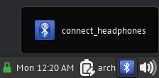

Arch Linux Bluetooth Audio Setup Guide
In this blog post, I’ll show you how to set up Bluetooth audio on Arch Linux. We will be using bluez for handling Bluetooth and pulseaudio for handling audio. The bluez and bluez-utils packages provide the Bluetooth protocol stack and control utilities, respectively. The pulseaudio-bluetooth package provides Bluetooth support for the pulseaudio sound server, which should already be installed on your computer.
Installing Required Packages
To get started, we will need to install bluez, bluez-utils and pulseaudio-bluetooth packages. This can be done by running the following command in the terminal:
sudo pacman -Syu bluez bluez-utils pulseaudio-bluetooth
Next, start and enable the Bluetooth service:
sudo systemctl --now enable bluetooth.service
By default, the Bluetooth daemon will only allow access to bnep0 devices for users who are members of the lp group. Make sure to add your user to this group if you plan on connecting to a Bluetooth tether. If desired, you can change the required group in the file /usr/share/dbus-1/system.d/bluetooth.conf.
sudo gpasswd -a your_user_name lp
Pairing
To pair your headset, the exact procedure will depend on the specific device. In general, however, you can follow these steps:
Enter the bluetoothctl command to enter the prompt:
bluetoothctl
[bluetooth]#
Turn on Bluetooth and start scanning for devices:
[bluetooth]# power on
[bluetooth]# scan on
Pair and connect to your headset:
[NEW] Device 00:11:22:33:44:FF Amazing BT42
[bluetooth]# pair 00:11:22:33:44:FF
[bluetooth]# connect 00:11:22:33:44:FF
[bluetooth]# exit
If there is a problem, you can try the following steps:
pulseaudio -k
bluetoothctl
[bluetooth]# connect 00:11:22:33:44:FF
[bluetooth]# trust 00:11:22:33:44:FF
Setting Default Device
Now that your headset is paired, you can set it as the default device in Pulseaudio. This can be done using either a graphical interface or the pactl command.
To use the pactl command, you will first need to list all devices and filter out those that are sink or output devices:
pactl list short | grep -e sink -e output
Look for the device that has “bluez_sink” or “bluez_output” and copy the symbolic name, starting with “bluez” and ending with “sink”.
Next, we will create a script to connect to the headphones and set them as the default output. Create the connect_headphones script in the ~/.local/bin folder:
#!/bin/sh
#Headphones MAC address
hp_mac="00:11:22:33:44:FF"
#Headphones sink symbolic name
hp_sink="bluez_sink.00_11_22_33_44_FF.a2dp_sink"
bluetoothctl power on
bluetoothctl connect $hp_mac
#sleep 3 is optional
sleep 3
pactl set-default-sink $hp_sink
Replace the MAC address and symbolic name with those of your headphones. The sleep 3 3 second delay is the minimal delay needed on my system to connect my headphones. You may or may not need it.
Make the script executable:
chmod +x connect_headphones
You can now run the script using dmenu or create a launcher and put it in your panel (e.g., for Xfce4).

That’s it! With these simple steps, you should now have a working Bluetooth audio setup on your Arch Linux system.
References
https://wiki.archlinux.org/title/bluetooth_headset https://www.youtube.com/watch?v=Jhzqm8JKekk